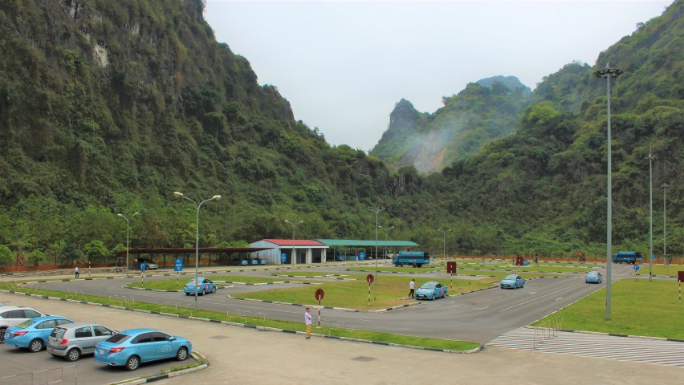
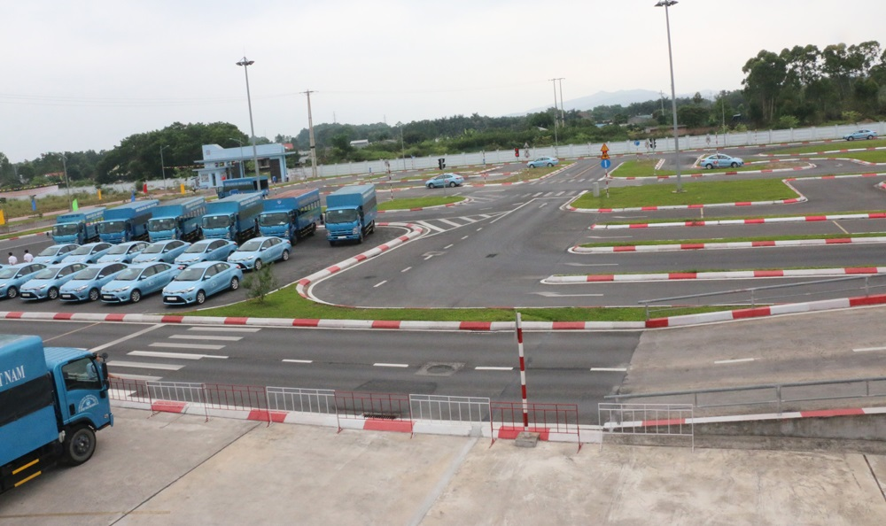

Ô tô cá nhân
B số tự động
Phù hợp người chủ yếu sử dụng ô tô số tự động chở người trong phạm vi hạng B.
Học phí20,9 triệu
Thời gian42 ngày
Tra cứu B số tự động, B số cơ khí, C1, A1; học phí, hồ sơ, DAT, khu vực học và lịch sát hạch. Đăng ký tư vấn trực tuyến để được hướng dẫn theo nhu cầu sử dụng xe.

Mỗi khóa học có thông tin riêng về phạm vi lái xe, học phí, thời gian và những điểm cần biết trước khi đăng ký.
Phù hợp người chủ yếu sử dụng ô tô số tự động chở người trong phạm vi hạng B.
Cho người muốn học xe số cơ khí và phạm vi sử dụng của hạng B theo thông tin đang áp dụng.
Dành cho người cần phạm vi lái xe rộng hơn hạng B theo quy định đang áp dụng.
Học phí và thời gian được cập nhật theo thông báo áp dụng tại thời điểm đăng ký.
Người học có thể tự kiểm tra các thông tin cơ bản trước rồi mới quyết định đăng ký.
Chọn khu vực thuận tiện để xem địa điểm học, chương trình và thông tin phù hợp.
Thông tin học lái xe và sát hạch tại khu vực Cẩm Phả.
Xem thông tin →
Thông tin dành cho người học ở Uông Bí và khu vực lân cận.
Xem thông tin →
Thông tin học lái xe dành cho người học tại Móng Cái.
Xem thông tin →Các bước được sắp xếp theo hành trình thực tế từ chọn hạng, chuẩn bị hồ sơ đến học và sát hạch.
Xác định nhu cầu dùng xe và hạng phù hợp.
Kiểm tra giấy tờ và thông tin đăng ký.
Nắm quy tắc giao thông và kiến thức nền.
Học kỹ năng lái và hoàn thành tiến độ thực hành.
Luyện nội dung cần thiết trước ngày thi.
Theo lịch và quy định đang áp dụng.
Các bài hướng dẫn được nhóm theo nhu cầu: chuẩn bị trước khi học, lý thuyết, kỹ năng thực hành và sát hạch.
Nếu chưa chắc lựa chọn nào phù hợp, hãy xem phần so sánh hạng B và đối chiếu nhu cầu sử dụng xe thực tế trước khi đăng ký.
Nên kiểm tra danh mục hồ sơ đang áp dụng trước khi đến nộp để tránh phải bổ sung nhiều lần.
DAT là nội dung theo dõi quá trình học thực hành lái xe trên đường. Xem phần “DAT là gì?” để hiểu rõ hơn trước khi bắt đầu khóa học.
Tư vấn miễn phí. Các khoản học phí, lệ phí và chi phí chính thức thực hiện theo thông báo đang áp dụng.
Chọn Cẩm Phả, Hạ Long, Uông Bí hoặc Móng Cái trong mục Khu vực học để xem thông tin phù hợp.
Thông tin đăng ký được ghi nhận vào hệ thống tiếp nhận để liên hệ tư vấn. Hệ thống lưu nguồn truy cập quảng cáo khi có để đo hiệu quả và không yêu cầu thanh toán ngay trên form.
Chỉ cần họ tên, số điện thoại, hạng quan tâm và khu vực. Hệ thống sẽ ghi nhận đăng ký để hỗ trợ bước tiếp theo.
Điện thoại/Zalo: 0398696879